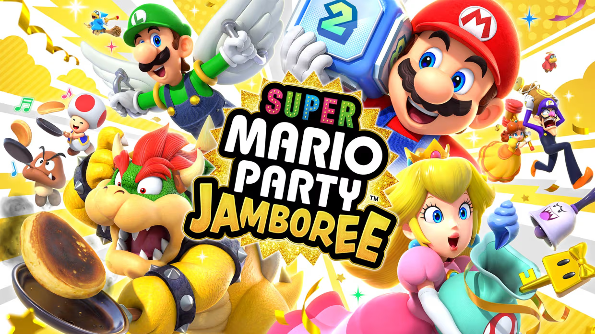
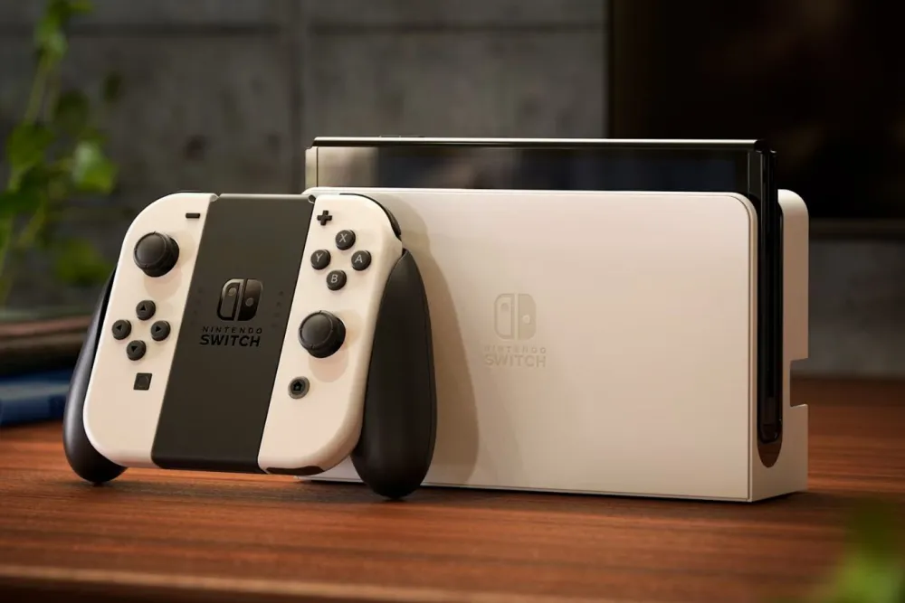

With the release of Nintendo's Super Mario Party Jamboree on the horizon, you may be wondering if it will be worth purchasing. Based on everything I know about the game, I have decided to compile a handful reasons I believe you should buy the game when it launches on October 17th.

1. Biggest Mario Party Yet
As stated in Nintendo's marketing for the game, Super Mario Party Jamboree will be the biggest game in the series. Featuring 22 playable characters, 7 boards, 112 minigames, and 7 modes, this game is sure to have something for everyone.
2. Online Multiplayer
For the second time in the series, Super Mario Party Jamboree will launch with full online functionality for its main board game mode. Players can compete with their friends or match against random opponents. Additionally, two new modes will make use of online play. The 20-player Koopathlon mode pits players against each other in a race to collect the most coins. Bowser Kaboom Squad is a cooperative mode that challenges 8 players to work together to defeat a giant Impostor Bowser.
3. Return to Classic Board Gameplay
Super Mario Party Jamboree returns to the series roots, being the first completely new game to feature a dice block that rolls up to 10 since Mario Party DS in 2007. 2018's Super Mario Party made an attempt at being a return to form, but ultimately failed in the eyes of fans due to its small board size, lack of boards, unbalanced new mechanics, and painfully slow pacing. Mario Party Superstars fixed all of these issues when it released in 2021, but it only featured remade content from older games. Jamboree takes the solid foundation laid by Superstars and expands upon it with brand new content. The new boards are all large and feature unique mechanics to keep gameplay interesting. The board mechanics and new items create an element of strategy that has been missing from the series for almost two decades.
4. Returning Content
In addition to the all the new content, Super Mario Party Jamboree is bringing back 10 minigames from previous entries. The Mario's Rainbow Castle board from Mario Party 1 will return alongside Western Land from Mario Party 2.
Whether or not you intend to buy the game on day one, I hope that this list will convince you to try it at some point. It may be too early to say, but I believe this game has the potential to be the best in the series.
Must Play Nintendo Switch Games You May Not Know About
Ryan Bush
Over the years, Nintendo has made a name for itself by making games that are unique, creative, and most of all, fun. They are most known for creating the Super Mario and Legend of Zelda series, but they made plenty of others that have historically underperformed despite the quality of their games. My aim with this article is to recommend some of these lesser known series, because their Switch entries are some of the best the console has to offer.

1. Pikmin 4
Pikmin 4 is a real time strategy game in which you command an army of alien creatures called Pikmin. After crash landing on an Earth-like planet, you must use the help of the pikmin to battle giant creatures and collect treasure to restore power to your ship. Pikmin 4 is the biggest game in the series. It is also the most accessible to new players. The Pikmin series has always sold a low amount of copies due to the misfortune of only releasing games on unsuccessful consoles. This has finally changed with Pikmin 4 releasing for Nintendo Switch. The console is a massive success but the series is still relatively unknown. The entire series has made its way to the Nintendo Switch, so I encourage everyone to give the series, but especially Pikmin 4, a try.
2. Metroid Dread
19 Years prior to this game's 2021 release, Metroid Dread was teased for the Nintendo DS. The game was ultimately canceled as the developers felt the technology was not powerful enough to allow them to fulfil their vision for the game. Fans hoped for years that the project would see a revival, but most gave up hope. Then, to the surprise of many, Metroid Dread was announced for the Nintendo Switch, set to release a few months later. As a fan myself, the wait was absolutely worth it. Metroid Dread is currently my favorite game in the series and its not even close. Its a miracle the game turned out so great after all the anticipation. I could not recommend this game more. Metroid as a series deserves more love, Dread especially.
3. Kirby and the Forgotten Land
Unlike the other two series on this list, Kirby has seen frequent game releases over the years. Kirby is also more widely recognized. Despite this, Kirby games usually sell less than most Nintendo games. Forgotten Land is the series first attempt at a 3D Platformer. Kirby's moveset has lost a bit of complexity in the transition from 2D to 3D, but I think the simplicity works in its favor. This game is filled with creative levels and boss fights. Forgotten Land tries a lot of new things and pulls them off well. Forgotten Land is one of my favorite Kirby games, I would recommend it to anyone looking to get into the series.